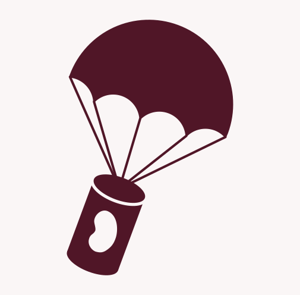

The Engineering of a Parachute
Written by Philip Nanias ..... 26 December 2024
In the engineering of a parachute, there are many intricacies one must initially consider. What is the shape of the parachute? Does it need to be asymmetrical, or would it be better to be radially symmetrical? How large must it be in order that the forces acting upon the object cancel out, giving a slow enough and steady descent?
First, we look at the purpose of the parachute – is it there so that the object may freely flow vertically downwards, like those commonly seen attached to detached rocket thrusters, or do we want it to provide movement in a direction, such as a paraglider’s parachute? For those which are there to allow a stable and slow downwards motion, such as our cansat, an axially symmetrical, conventional parachute would be considered. This is one that would increase force of drag equally in all directions, such that the centre of pressure from this force lies upon the intersection of the central vertical axis of the parachute, and the line of action of the overall drag force (the two might be different, say, if the parachute was tilted for example).
For those parachutes in which it is beneficial to give the object carried a drive, so that in a way it can manipulate its velocity through the air by adjusting positions of the chords connected to the parachute. These are commonly called gliding parachutes, where a resultant moment is induced about the centroid of the parachute system, leading to a momentary lift of the system through the air.
In deciding the shape of the parachute canopies, one must initially consider the weight of the loads on the parachute, for the strain applied to the chords, and hence the deformation of the intended shape must be considered into the changed drag force that affects the system. When deployment of the parachute is required at a high speed, (for example the parachute of a descending spacecraft), ribbon patterns are normally used, for the large volume of air escaping through the gaps between ribbons reduces the impulse on the overall parachute. For gliding parachutes, an aspect ratio (ratio of lengths of the 2 sides of the canopy) must also be considered, for this varies the Lift Coefficient, C_l, with the angle of attack. Generally, a 3:1 aspect ratio provides the most lift for low angles of attack, from zero to ten degrees, producing a lift coefficient of ~0.45 at 0 degrees of attack, and ~0.8-0.9 at five to ten degrees of attack, followed then by decreasing ratios until 1:1, where it brings the least lift to the system. However, rather interestingly, the low aspect ratio of 1:1 indeed provides the most lift at high angles of attack, a lift coefficient of ~0.7-0.8 at 15-20 degrees of attack. This is simply due to the increased downwash (change in direction of air as it goes ‘under’ the canopy), which essentially reduces the effective angle of attack upon the parachute, so a greater angle is required before the parachute begins to stall (where lift decreases after the optimum angle of attack for the canopy). As expected, the Drag Coefficient, C_D, is generally greater for lower aspect ratio canopies at all angles of attack.
There is often a range of choices from which an engineer may pick from to design the parachute, but how would they pick from the great variety, one might ask? Well, similar as many of them are, they all have their various advantages and are specialised for different tasks. A common conventional parachute design is the flat circular canopy – at a low cost and lightweight, making it suitable for cargo recovery, and also for those such as paratroopers. However, there are the drawbacks – it has an oscillation in its central axis of the parachute, decreasing stability, though this is minimised when multiple parachutes are in use for one load, albeit rather inelegant. An alternate conventional design one may use may be the extended skirt canopy – similar to the flat circular design, though with a greater inflated length, giving the system a greater drag coefficient, and so subsequently reduced velocity of descent for larger loads. As mentioned previously, we also have the strong ribbon canopy, for high dynamic pressures exerted onto the canopy – a trade off between efficiency of drag force, but allows greater stability of the parachute, so that it won’t break, and may still function as a proper parachute in the high pressure conditions. Similar to this, there is also the ring slot parachute – the same purpose, except with larger gaps, making it cheaper, and so more viable for high pressure cargo delivery or aircraft deceleration.
As much variation as there surprisingly is in the incorrectly viewed conventional parachute, there is not as much choice in the design of a gliding parachute canopy, apart from the different aspect ratio. Generally, as seen in that of the parachute of a paraglider, there are cross-flow ventilation ports – sort of ‘mini vents’, that behave similar to the gaps within a ribbon parachute. There are also stabiliser panels within the canopy, and in the cases that it is manned by a person, such as a paraglider, a steering line.
Whilst this all in itself may seem very daunting to an inexperienced reader, fortunately for us, we do not have to worry about all of these complex equations, and variables and forces in which the flow of air affects the direction of movement of the CanSat. Our project does not contain the impressive NASA aircraft parachutes, able to withstand hundreds of KNm^-2 of pressure, or the intricately designed chords and canopies of those which carry paratroopers in war. Indeed, all of this is simplified, the only parachute we need to engineer being one able to carry a small, 300g can falling through the air, for which we chose a conventional parachute, a simple hexagonal shape in order to have a high enough coefficient of drag, but still have enough strong chords to carry the can, essentially a simplified solution of aerodynamics for the Beansat team (and those of you who follow along with us!) to experience.